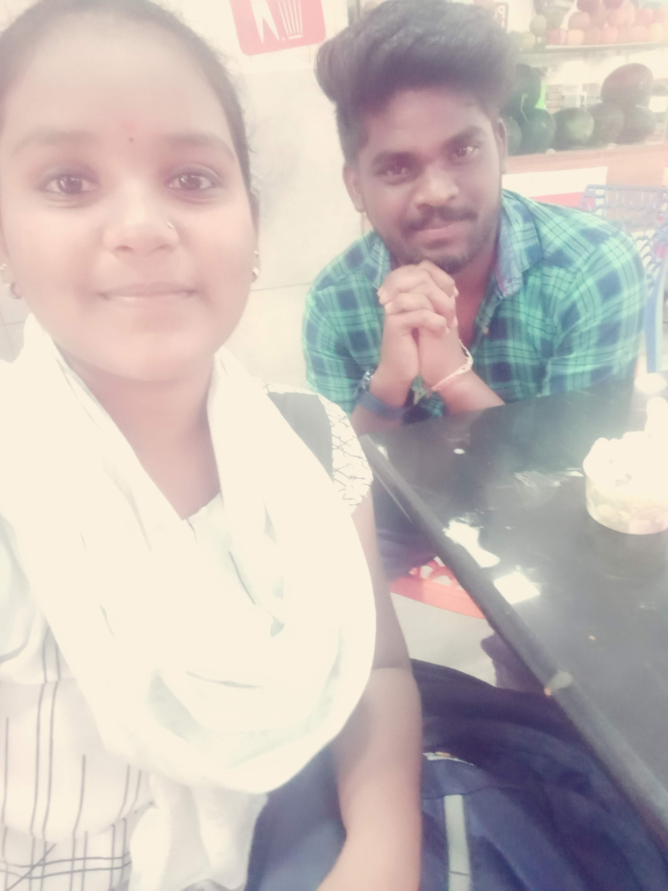
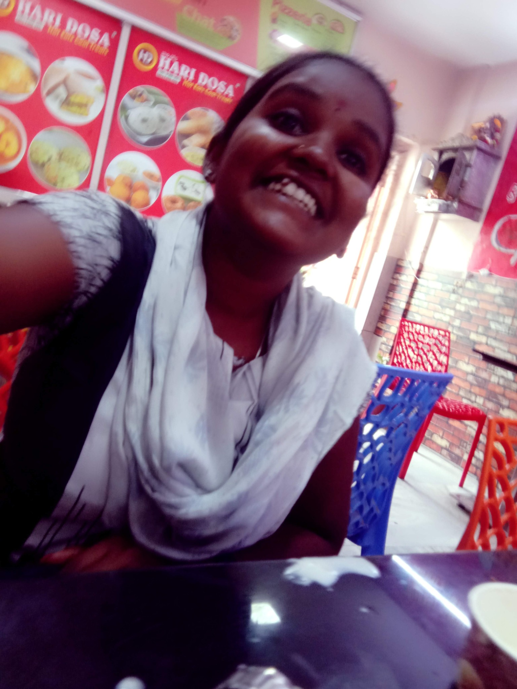
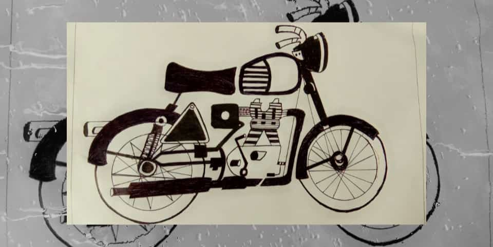
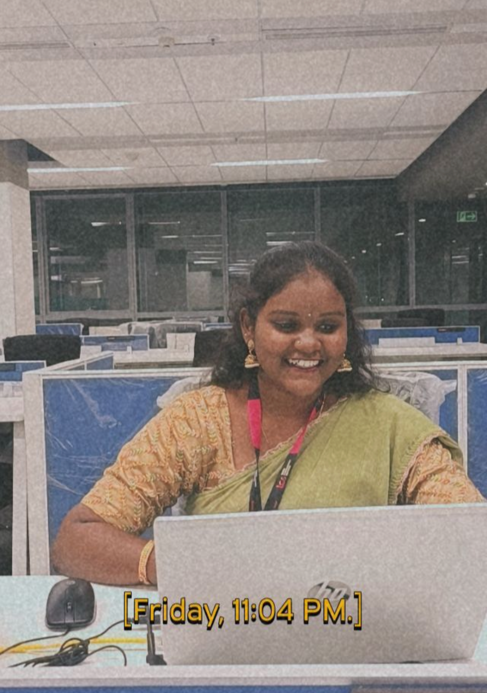
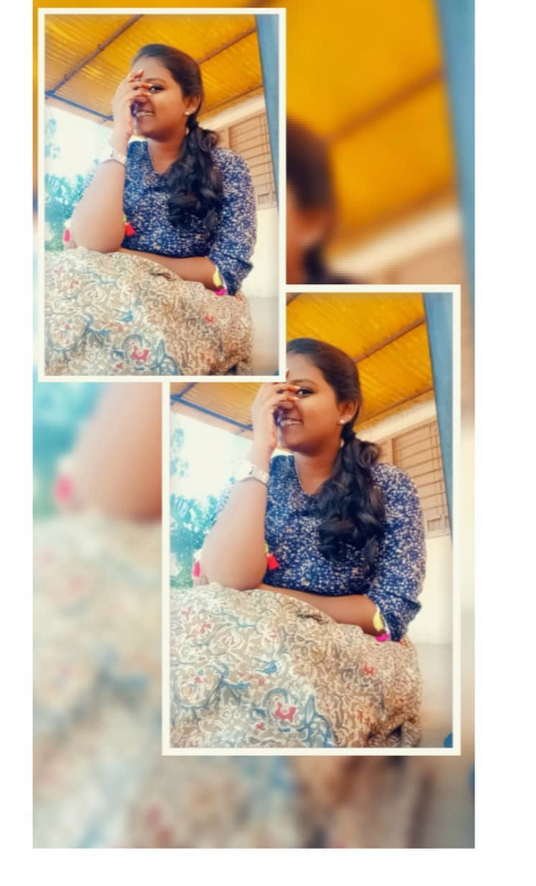

The Visit
On one visit to your city, I borrowed a bike from a relative, got your location, and came to your home with a friend.
You gave me tea, I stayed for a short time, and somehow even a simple visit became one of the memories I still remember.
FROM ONLINE MESSAGES TO REAL MEMORIES
We first knew each other through screens, messages and social media. For two or three years, that was where the friendship lived. And then, eventually, it became something we could actually remember outside a chat window.
FRIENDSHIP ARCHIVE
We met on Facebook and stayed connected online for around two or three years before meeting in person.
When we finally met at a small restaurant and took pictures together, I remember thinking that it felt a little unreal.
After knowing someone through messages and social media for so long, suddenly sitting in the same place felt completely different.


OTHER MEMORY FRAGMENTS
These are simply moments I remember, without trying to force them into an order I am not completely sure about.
On one visit to your city, I borrowed a bike from a relative, got your location, and came to your home with a friend.
You gave me tea, I stayed for a short time, and somehow even a simple visit became one of the memories I still remember.
We also went to a museum together.
I do not want to pretend I remember every detail perfectly. I just remember that it became another small piece of our real-life friendship.
We do not talk every day, but sometimes a normal call somehow turns into almost an hour.
Those conversations have always made me feel happy and grateful for the friendship.

SAVED FOR A REASON
I kept this bike drawing because sometimes the smallest things become part of how we remember someone.
It does not need a dramatic story. I just liked it enough to keep it.
LITTLE MOMENTS


ONE LAST QUESTION BEFORE THE FINAL FILE
Do you love me? 🥹💗
No pressure. Just answer what's in your heart!
Whether you clicked YES or NO, I know you! 😂❤️ You can't escape my questions that easily.
Okay, enough teasing... your final surprise is waiting! 🎁
Proceed to the Final Letter →FINAL FILE
The last page is not an investigation. No questions, no evidence, no jokes to solve. Just a birthday letter.
Open the Final Letter →